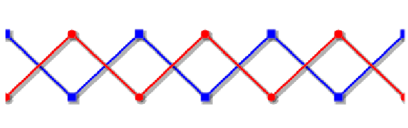

This example shows how the series rendering can be customized. The options will be
detailed in the next section.
Serie<Integer> serie1 =
new Serie<Integer>(getSampleUniDimensionalData());
serie1.setMaxDisplayed(3.);
serie1.setMinDisplayed(0.);
serie1.setStrokeColor("red");
serie1.setStrokeWidth(2);
serie1.setMarkerType(Serie.MARKER_TYPE_CIRCLE);
Serie<Integer> serie2 =
new Serie<Integer>(getSampleUniDimensionalData2());
serie2.setStrokeColor("blue");
serie2.setStrokeWidth(2);
serie2.setMarkerType(Serie.MARKER_TYPE_SQUARE);
